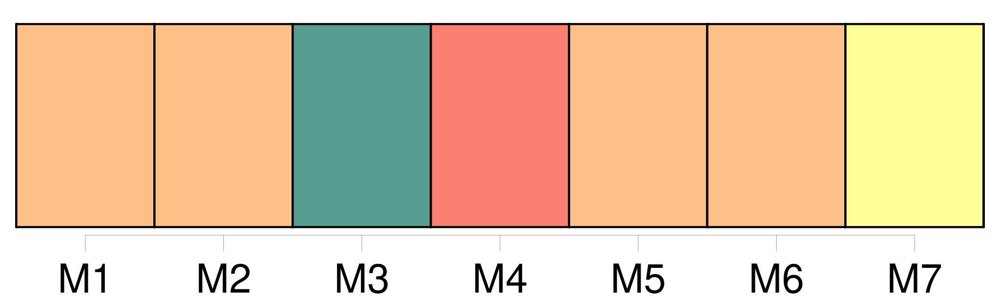
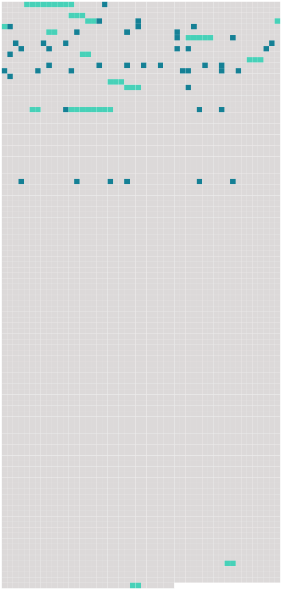

Longueur nb maillons : 60 mentions |
 |
Il s'attacha à [l'une des femmes les plus distinguées de Genève] et consacra plusieurs années à [lui] faire partager ses sentimens. [3 phrases]
[Mme Gallatin Vaudenet] était charmée d'avoir obtenu cela à la recommandation de Mme Pictet … « Comme je vous l'ai dit, j'ai une annonce demain, et je compte toujour aller à la fin de la semaine prochaine à Dardagny [ chez les Châteauvieux ] et en revenir avec [une compagne] [qui] sûrement nous rendra tous heureux.
[Elle] aurait bien envie de voir mes filles et j'attends de vous des sentimens d'enfans qui sont bien nés ».
Qui était [la compagne] [que] M. de Constant se proposait de ramener de Dardagny? Il est curieux que le premier portrait que nous ayons d' [elle] soit tracé par Charlotte de Constant, celle dont [elle] devait prendre la place. [1 phrases] [ 1758 ] « [Mlle Gallatin] vint hier avec [ses] cousines. Si votre frère [ Juste ] [en] veut, qu'il vienne avec vous. [Elle] a le nez un peu long, mais c'est grêler sur le percil. [2 phrases]
[Elle] ferait [une fort brave petite femme] , mais n' [irait] pas, je crois, demeurer à Lausanne ».
[Elle] y alla, y [vécut] et même y [mourut] , mais ce ne fut pas pour suivre Juste. On raconte à propos de ce nez qui, paraît -il, était plus qu'« un peu long » qu'un jour, étant dans [son] salon de Lausanne, [elle] sonnait un domestique. [Elle] eut longtemps à tirer le cordon. Enfin, un rustaud apparaît et dit de sa voix lente et nasillarde : « [Madame] a [son] …… [2 phrases]
— Par tous les diables, oui, [madame] l'a, [son] nez, vous le voyez bien, s'écrie l'époux de [la dame] qui n'était autre que Samuel de Constant. [2 phrases] « [Mlle de Gallatin] , après avoir refusé tous les hommes qui pouvaient prétendre à [elle] , était restée après trente ans indépendante. [Sa] mère, qui connaissait [ses] goûts et [ses] ressources, [lui] avait conseillé en mourant de ne point [se] marier …… [Elle] avait le goût de la perfection dans les détails ; [sa] figure imposante et agréable, [ses] manières nobles, attirèrent chez [elle] et enchantèrent un homme vivement sensible, à qui cet ensemble donnait l'idée de toutes les perfections. [Elle] [se] défendit longtems, mais enfin [elle] ne put [s'] empêcher de partager les sentimens de celui qui [l'] aimait avec tant de passion et de dévouement et qui l'exprimait avec tant d'esprit. [2 phrases]
»
S'il n'y eut pas guerre ouverte, ce fut plutôt une négation de rapports ; on se demandera souvent en lisant dans la suite la correspondance du père et des filles quel rôle jouait [cette nouvelle mère] , et on en viendra à conclure qu' [elle] jouait pour le moins un rôle fort effacé. [4 phrases] Je vous aime, aux défauts de votre âge près, je vous trouve de bons et aimables enfans, je vous promets que je ferai tout ce que je pourrai pour que nous soyons heureux ensemble, ce sont aussi les sentimens de [Mlle Gallatin] , vous trouverez en [elle] [une bien bonne amie et une mère tendre] Cette espérance [ lisez : cette illusion d'amoureux ] m'a attaché à [elle] autant que toutes [ses] autres qualités …… [22 phrases] [Ma] belle-mère était alors bonne et aimable pour nous. [Son] mari et les enfans de [son] mari étaient [ses] premiers objets d'intérêt et d'affection, et la vivacité de [ses] sentimens suppléait aux défauts de [son] caractère. [163 phrases] Tout de suite, on fait mille projets, on voit dans les boutiques les jolies choses qu'on pourra rapporter à [la belle-mère] , envoyer aux pensionnaires de Coire. [9 phrases] Je vous défends expressément, et sous peine de me faire le chagrin le plus vif, de rien acheter ni pour moi, ni pour [votre maman] , ni pour vos frères. |
 |
Il est possible de télécharger la ressource sur la page Ortolang |
Si vous avez des questions ou vous voyez des erreurs, merci d'envoyer un mail à silvia.federzoni89@gmail.com |